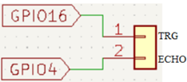
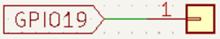

Objetivo. Detectar un objeto a menos de 5 cm usando un sensor ultrasónico HC-SR04. Activar una alarma sonora mediante un zumbador cuando se cumpla la condición de proximidad.
Procedimiento.
-
Conectar el sensor HC-SR04 al ESP32:

-
Conectar el zumbador al pin GPIO19 del ESP32.

- Configurar el HC-SR04 para medir distancias mediante la función distancia().
-
Implementar la lógica para que, si la distancia es menor a 5 cm, el zumbador emita pulsos
intermitentes como alarma.
import machine import time # Define los pines trigger y echo para sensar la distancia TRIG = machine.Pin(16, machine.Pin.OUT) ECHO = machine.Pin(4, machine.Pin.IN) buzzer = machine.Pin(19, machine.Pin.OUT) # Calcula la distancia usando el sensor ultrasaonico def distancia(): # Asegura que inicialmente el trigger este off TRIG.off() time.sleep_us(2) # Espera durane 2 microsegundos # Envia un pulso de 10-microsegundos al pin trigger TRIG.on() time.sleep_us(10) TRIG.off() # Espera un momento para que el pin echo pase a high while not ECHO.value(): pass # Registra el tiempo cuando el pin echo va a high time1 = time.ticks_us() # Espera a que el pin echo vaya a low while ECHO.value(): pass # Registra el tiempo cuando el pin echo va a low time2 = time.ticks_us() # Calcula la diferencia de tiempo entre el registro de los dos tiempos during = time.ticks_diff(time2, time1) # Calculate and return the distance (in cm) using the speed of sound (340 m/s) return during * 340 / 2 / 10000 # Mide continuamente la distancia y la imprime while True: dis = distancia() print("Distancia: ", dis) time.sleep_ms(300) # Espera 300 milisegundos antes de enviar pulsos if dis < 5.0: # Itera sobre los valores 0 to 3 usando un ciclo for for i in range(4): # Enciende el zumbador colocando su valor en 1. buzzer.value(1) # Pausa durante 0.2 segundos. time.sleep(0.1) # Apaga el zumbador buzzer.value(0) # Pausa durante 0.2 segundos. time.sleep(0.1) # Pausa durante 1 segundos, antes de reiniciar el ciclo while print(" !!! ALARMA OBJETO MUY CERCANO!!!") else: continue
Actividades sugeridas.
- Cambiar el umbral de 5 cm por otro valor para ajustar la sensibilidad.
- Hacer que el zumbador emita un sonido continuo en lugar de pulsos.
- Mostrar el estado de la alarma en una pantalla LCD1602.
- Probar la detección con diferentes objetos y distancias para evaluar la precisión.
- Guardar el programa en el microcontrolador y ejecutarlo sin conexión al PC.